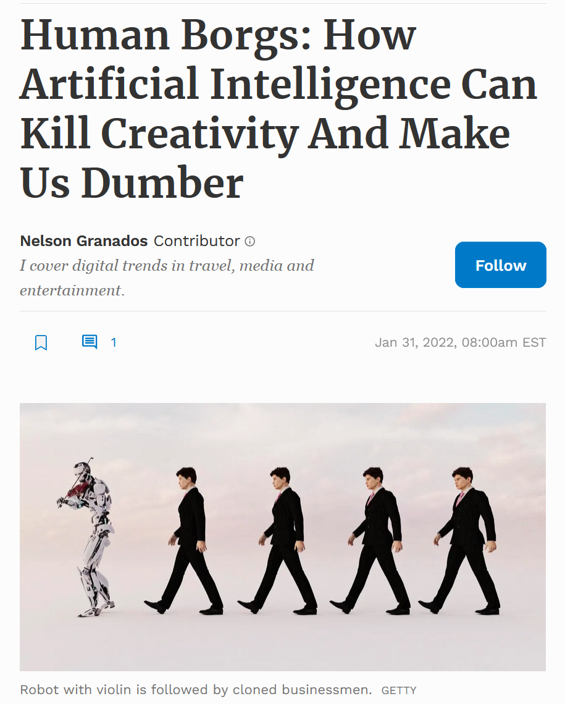
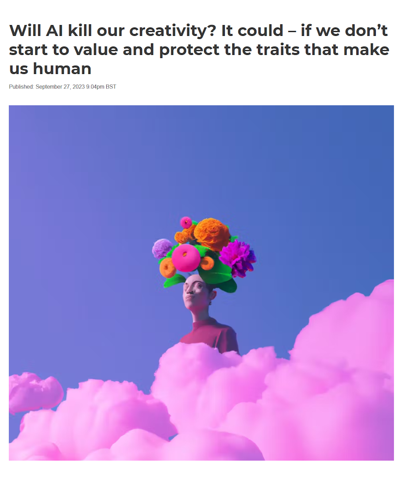
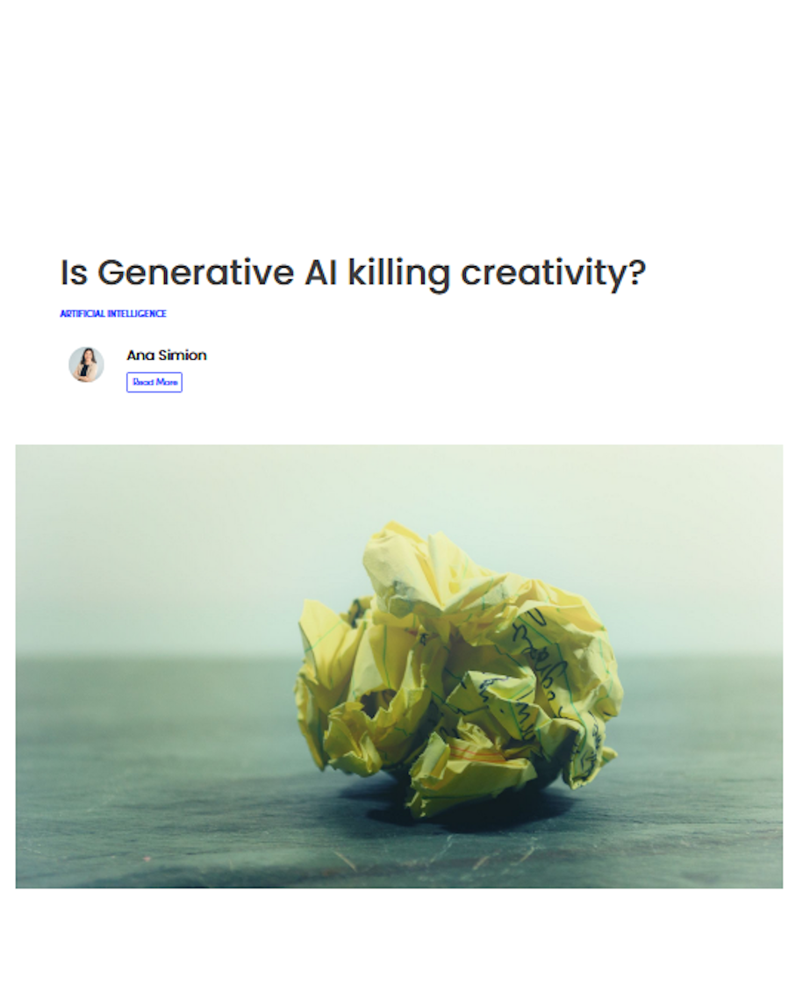
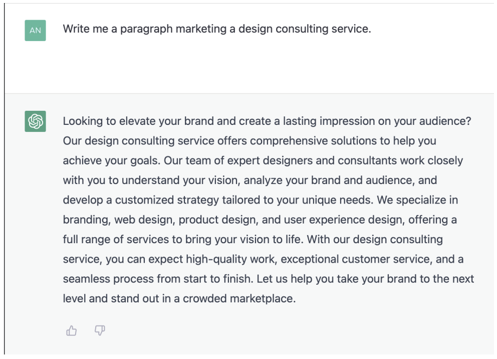
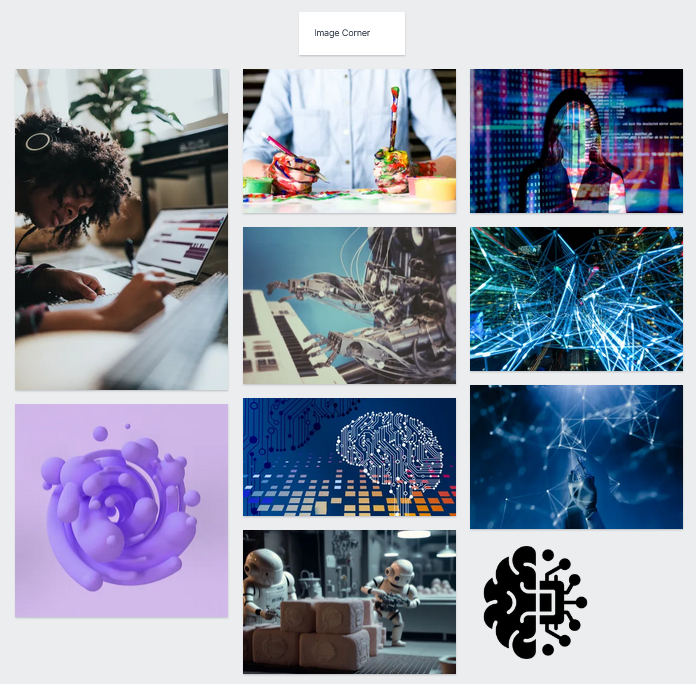

IL Task 1: The Stages of the Creative Process
There have been a lot of little decisions and design implementations that I have carried out over this semester.
- A prominent example of this was with "The Uncensored Library", the website for a Minecraft-based project relating to freedom of information.
- This website and project are targeted at a younger audience based all around the world and is very technology themed, making it a pretty good comparison to my own project.
- Immediately the dark coloured bars used to seperate sections and use of whitespace stood out to me as being relatively simple concepts, but that add a lot of professionalism and modernity to the site.
- Additionally the background images that move with the users scrolling seemed very stylish to me, and are a feature I would like to implement something similar to when I can.

website source
IL Task 2: Analyse the use of Images on the Web
For the first part of this task, I'm looking at the header images of 3 of the articles I've been looking at:
| Forbes | The Conversation | AI Accelerator Institute |
|---|---|---|
|
|
|
Some of these articles also feature images for other purposes:
- This image from the The Converation article was used to give an example for how AI can be used creatively, increasing the readers comprehension of the topic
- Additionally, all images used on all three of the articles I analysed here were raster images, usually PNGs, instead of vectors.
IL Task 3: Generate a Portfolio of Images
This task involved collating images relevant to my project. I have downloaded a selection of royalty free ones to a local folder and have also created an area for them on my mood board:
